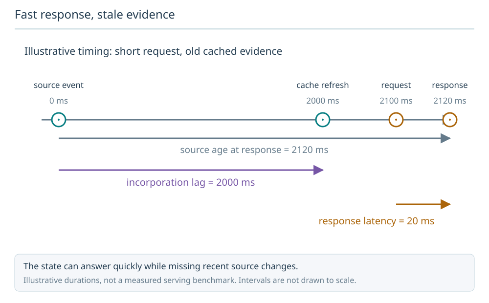
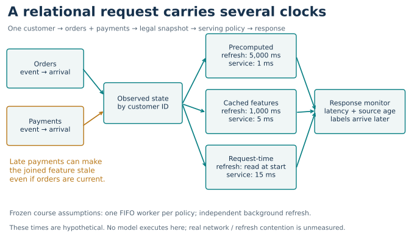
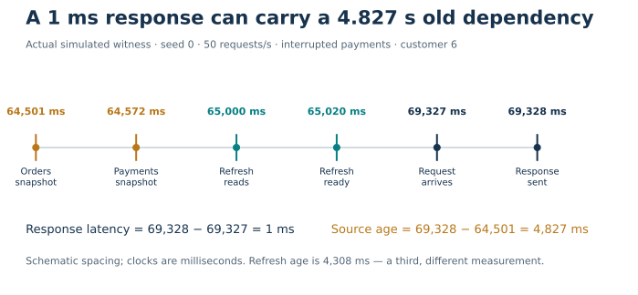
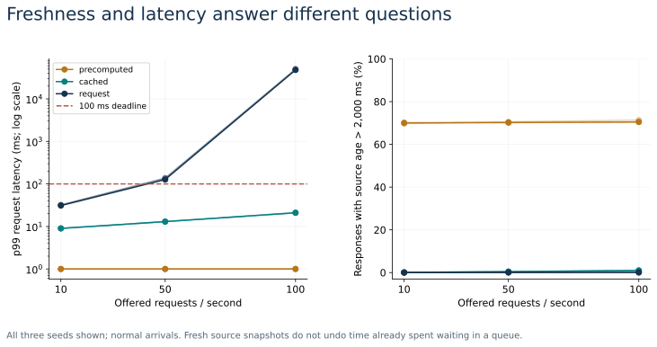

Year 5 · Quarter 3 · Lesson 186
Production constraints
From benchmark evidence to a serving contract
A relational model can score well offline and still return an answer too late—or return a quick answer based on old related rows. Your tangible win today: write a contract that checks response time and relational information age separately.
Route: 15-minute core reading, then a 35–45-minute lab. You need query identity and temporal cutoffs from Lesson 175, context and batch evaluation from Lesson 176, and nested timers from Lesson 177. Each is recapped below. Lesson 185 asks whether a prediction justifies an action; this lesson asks whether the required information can arrive in time. You do not need that lesson’s simulator to follow this one. No previous practical exit is marked complete here.
Executed: complete 81-scenario course simulation / 810,000 responses, plus 300 original batch-receipt replays. All service times are hypothetical. Live production performance, fresh model inference and paper-result reproduction are NOT_RUN; request latency from original batch receipts is NOT_MEASURED. Learner status: PENDING_WRITTEN_DEFENSE.
1 · The missing contract¶
In an offline benchmark, features and predictions can already be on disk. At serving time, a customer request must find the customer’s orders, connect payments to those orders, form the model input, and return an answer. The slowest or least current dependency can determine whether that answer is usable.
Huyen distinguishes precomputed predictions, online prediction with historical features, and prediction using fresh features. These offer different ways to move work off the request path. Our lesson makes those choices executable with a deliberately small relational simulation. Primary reading: Huyen, stages 1–3.
Fast response, stale evidence
An event can wait for a refresh before it reaches the cached representation. A quick response measures serving latency; it does not prove the evidence is fresh.

Predict: What is the source age when the response is returned?
2120 ms: response time 2120 minus source event time 0. The 2000 ms incorporation lag and 20 ms request latency measure different intervals.
Answer: 2120 ms: response time 2120 minus source event time 0. The 2000 ms incorporation lag and 20 ms request latency measure different intervals.



This is a serving architecture, not a new model architecture. Twenty customer IDs join two upstream snapshot streams, orders and payments. We model when their state is available, not their business values or prediction accuracy. Production systems need additional measurements for network hops, real joins, model execution, shared refresh resources, failures and capacity.
2 · Follow four clocks¶
Event time says when a source snapshot describes the world. Arrival time says when our service can see it. Materialization time says when a derived feature or precomputed prediction becomes ready. Response time says when the caller receives the answer. Knowing an event’s timestamp does not prove we had received it then.
At service start, the request can read only dependency snapshots that have arrived. For cached policies, it sees only a refresh that has completed. Within each source, a late older snapshot cannot replace a newer one. For this fixture, each source update is a state snapshot: accepting the latest observed snapshot does not prove that every real transaction arrived.
We define:
- Request latency = response time − request arrival.
- Observed source age = response time − the oldest event time among required dependency snapshots.
- Materialization age = response time − materialization completion.
These definitions are course policy, with units of milliseconds. The source-age limit is conservative for this fixture; it is not proof of feature correctness. A missing dependency produces unknown source age and fails the freshness contract.


A fast cache can contain stale data. Conversely, a request can wait a long time in a queue, then read a recent snapshot at service start: its features are fresh at response but its answer is late. The chosen read point matters; a product requiring a snapshot as of request arrival needs a different information contract.
3 · Freeze the entire experiment¶
The executable target is L186 Relational Serving Contract, a course experiment. Huyen’s reading supplies design concepts, not numerical results to replicate. We run every cell in the frozen grid: 3 policies × 3 request rates × 3 arrival conditions × 3 seeds = 81 scenarios, each with 10,000 requests.
| Policy | Foreground service | Refresh | What waits on the caller’s path? |
|---|---|---|---|
| Precomputed prediction | 1 ms | Every 5,000 ms | Prediction lookup |
| Cached features | 5 ms | Every 1,000 ms | Feature lookup and nominal scoring |
| Request-time features | 15 ms | At service start | Nominal feature assembly and scoring |
All durations are hypothetical constants. Background refresh takes 20 ms on independent, unconstrained resources. No trained model runs. A single first-in, first-out (FIFO) foreground worker serves requests in arrival order. It serves every request to completion; there are no silent drops, retries, cancellation or autoscaling. Nominal rates are 10, 50 and 100 requests/s, with seeded, rounded exponential gaps. All three policies get exactly the same trace within each condition and seed. Bootstrap snapshots remain in the reported metrics; no warm-up responses are discarded.
Orders and payments publish state snapshots every 500 ms. Normal arrivals lag by 0–100 ms. In the middle third of the request horizon, payments either add 2,000 ms of delay or are held until the interruption ends. Orders continue. The simulation generates enough future source updates to drain the foreground queue. It cannot access those updates before their arrival.
The fixed limits are 100 ms request latency and 2,000 ms source age; equality passes. p99 uses the nearest-rank definition: sort 10,000 latencies and take the 9,900th. This is a finite-trace statistic, not an estimate with a calibrated production confidence bound. The three seeds expose trace variation; they do not cover hardware uncertainty.


| Policy · normal arrivals · seed 0 | Requests/s | p99 latency | Deadline misses | Stale responses |
|---|---|---|---|---|
| precomputed | 10 | 1 ms | 0.00% | 70.05% |
| cached | 10 | 9 ms | 0.00% | 0.08% |
| request | 10 | 31 ms | 0.00% | 0.00% |
| precomputed | 50 | 1 ms | 0.00% | 70.20% |
| cached | 50 | 13 ms | 0.00% | 0.43% |
| request | 50 | 127 ms | 2.87% | 0.04% |
| precomputed | 100 | 1 ms | 0.00% | 70.47% |
| cached | 100 | 21 ms | 0.00% | 1.00% |
| request | 100 | 47,983 ms | 99.71% | 0.06% |
This worked table shows seed 0; the figure includes all three seeds and the full report retains all 81 cells. No best seed or policy was selected.
Utilization compares arriving work with available worker time. At 100 requests/s, each request needs 0.015 seconds, so a 15 ms worker receives 100 × 0.015 = 1.5 worker-seconds of work per second: work arrives faster than that one worker can finish it. The observed finite-trace queue grows. Freshly reading dependencies cannot recover the already spent waiting time. Independent background refresh capacity favors cached policies in this experiment; measuring that cost is required before making a deployment decision.
4 · Change an assumption, predict, then inspect¶
Before selecting a new cell, predict whether the change affects queueing, source age, or both. Reset returns to cached features, 50 requests/s, normal arrivals, seed 0. The explorer displays complete saved cells; it does not interpolate a new result.
Try: hold rate and seed fixed, switch from normal to interrupted payments. Then switch policy. Can any policy make an unavailable payment snapshot arrive sooner? Why can the request-time policy have a lower stale-response fraction at high load? Check that it drains after the incident ends; this aggregate mixes different response times and is not evidence of better incident handling.
5 · Monitor what you can actually observe¶
Monitor latency, traffic, errors and saturation to understand the service. Here, deadline misses and queue wait expose operational trouble. Real error rates and resource saturation need instrumentation absent from this simulation. Google SRE, monitoring distributed systems.
Our freshness monitor examines the last 100 completed responses. It triggers only when more than ten are stale, after a complete window exists. This is a response-count window: at lower traffic, accumulating 100 observations takes longer. It is not a fixed-duration detector.
Report whether an alert was already active at the injected onset. “First alert response after onset” can be almost immediate for a policy that was stale all along. That is not new fault detection. The report also records new false-to-true episodes. Recovery bursts, sparse observations and this fixed threshold limit what either time means.
Quality needs a separate clock. In the simulation, labels become available 30,500 ms after each request’s arrival. We count their availability at the final response but compute no accuracy: no scores or labels were generated. This artificial delay illustrates the contract; it is not an F1 target window. Production scoring needs mature labels joined to the exact original request and model version. A latency or freshness alert alone does not establish model degradation. Huyen, natural labels and monitoring.
6 · The real batch evidence answers a narrower question¶
We authenticate all 300 original L176 run receipts and check the full two-task, three-model, five-context, ten-seed grid. Their batches contain 702 F1 or 825 trial queries. We compare individual JSON records with the phase receipts and reconstruct their timers independently using SQL.
474.434 s of inner evaluation time + 0.939 s from 12 distinct loading events sit inside 491.471 s of worker time. The difference is other worker work; it is not measured cloud startup. Do not add inner timers to the outer total.
Dividing a batch duration by its query count can describe amortized batch throughput cost. It cannot recover queueing, network or individual request latency. There are no per-request samples here, so request p99 remains NOT_MEASURED. This lane reads timing metadata, not checkpoint weights or saved prediction values. Hashes establish unchanged bytes, not the physical accuracy of the original clocks.
7 · Lab: implement three contracts that control the result¶
Open the student notebook, rendered executed solution, or solution notebook. The portable notebook embeds the receipt packet and visible simulator. It runs offline using the Python standard library, with no cloud call or model download.
- FIFO schedule: include time spent waiting behind earlier requests. Return every start and finish time.
- Dependency source age: use the oldest required snapshot; keep missing information unknown.
- Freshness alert: require the full trailing window and the strict threshold.
All three functions are called by the full 81-scenario run. An independent author check reconstructs every response using indexed prefix maxima and a different queue recurrence. Passing notebook checks is preparation for the written defense, not proof of learner mastery.
def schedule(arrivals, service_ms):
"""Single FIFO worker, no cancellation: return every (start, finish)."""
if type(service_ms) is not int or service_ms <= 0:
raise ValueError('Positive integer service duration required')
prior = -1
free = 0
result = []
for arrival in arrivals:
if type(arrival) is not int or arrival < 0 or arrival < prior:
raise ValueError('Nonnegative ordered integer arrivals required')
start = max(arrival, free)
free = start + service_ms
result.append((start, free))
prior = arrival
return result
CHECK: serve arrivals [0, 2, 30] with 10 ms service. Starts are [0, 10, 30], finishes [10, 20, 40], latencies [10, 18, 10]. Then change one dependency event from 90 to 60 at response time 100: the source age must increase from 20 to 40 if the other dependency is 80.
8 · Exit: write the fallback, not just the threshold¶
Write a six-sentence serving contract: required relational keys, snapshot/read point, response deadline, freshness limit, fallback action, and monitoring/label policy. Choose whether stale or missing dependencies cause abstention, a baseline response, or an explicitly marked stale answer. The simulation reports breaches; it does not execute or prove the quality of your proposed fallback.
Defend one choice under interrupted payments and another under overloaded request-time service. State the real measurements still needed before deployment. Tomorrow, recall the four clocks without looking. In a week, explain why batch throughput cannot establish request p99.
Ask the teacher about any unclear trace, metric or assumption. Bring your written contract for feedback.
Quick reference · Frozen protocol and commands · Complete report · Independent verification · Source ledger · Curriculum and the next privacy lesson
Next: Lesson 187. A response can meet its deadline and freshness limit while exposing a person’s information. Extend the serving contract with a protected unit and a precise release rule.